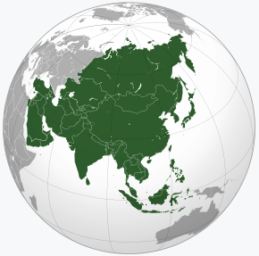

亚细亚洲，简称亚洲，面积4457.9万平方公里，覆盖地球总面积的8.6%，陆地总面积的29.4%；人口约为40亿，占世界人口约60.5(2010年)；是七大洲中面积最大，人口最多的一个洲。
亚洲绝大部分土地位于东半球和北半球。亚洲与非洲的分界线是苏伊士运河，苏伊士运河以东为亚洲。亚洲与欧洲的分界线为乌拉尔山脉、高加索山脉、里海、土耳其海峡和黑海。乌拉尔山脉以东，高加索山脉、里海和黑海以南为亚洲。大陆东至白令海峡的杰日尼奥夫角(西经169°40′，北纬39°27′)，南至丹绒比亚(东经103°31′，北纬1°16′)，西至巴巴角(东经26°3′，北纬39°27′)，北至切柳斯金角(东经104°18′)，最高峰为珠穆朗玛峰。跨越经纬度十分广，东西时差达11小时。西部与欧洲相连，形成地球上最大的陆地板块亚欧大陆。
亚细亚是一个非常古老的名称，希腊人称呼他们的东方为亚细亚，可能是来源于亚述人的名称，亚述一词也代表东方。
亚洲是世界三大宗教佛教、伊斯兰教和基督教的发源地。
亚洲主要特征是气候类型复杂多样、季风气候典型和大陆性显著。地跨寒、温、热三带，地形又复杂多样气候是的除温带海洋性气候外，世界上的各种气候在亚洲都有分布。东亚东南半部是温润的温带和亚热带季风区，东南亚和南亚是温润的热带季风区，中亚、西亚和东亚内陆为干旱地区。
区域合作在亚洲正在方兴未艾，东南亚国家联盟有10个成员国：文莱、柬埔寨、印度尼西亚、老挝、马来西亚、缅甸、菲律宾、新加坡、泰国和越南。东盟国家开动了和中国、日本、韩国三个东亚国家的对话机制，并已于2010年和中华人民共和国建立中国-东盟自由贸易区，目前中国已经和泰国先期启动水果蔬菜零关税机制。